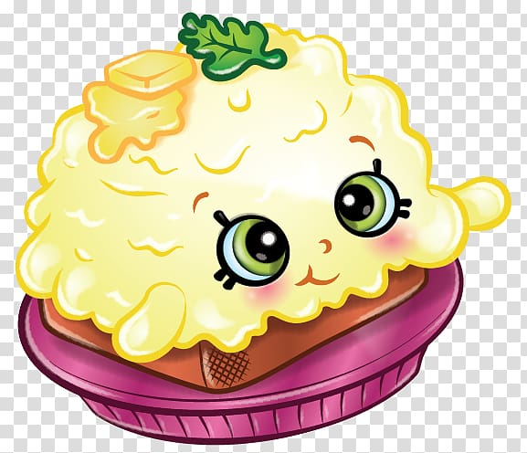

find another delish dish
mom's scrambled eggs

scrambled eggs just like mom used to make
nothing strange or odd about these eggs:)
ingredients
- 2 large eggs
- dash of milk
- 1 TBSP butter
- mom's mix (ask your mom)
- salt and pepper to taste
steps
- melt butter in a pan on medium-low heat
- whisk the eggs in a medium bowl until fully eviscerated and add salt
- add the dash of milk to eggs
- sprinkle in mom's mix. if your mom isn't around to give you
mom's mix, you may be able to convince a nearby mom that
you are her son or daughter. DO NOT ask her what's in the mix and DO NOT
look while she prepares it for you.
- when the pan is sufficiently hot, pour in the eggs. use a spatula
to keep them moving around the pan
- serve on toast